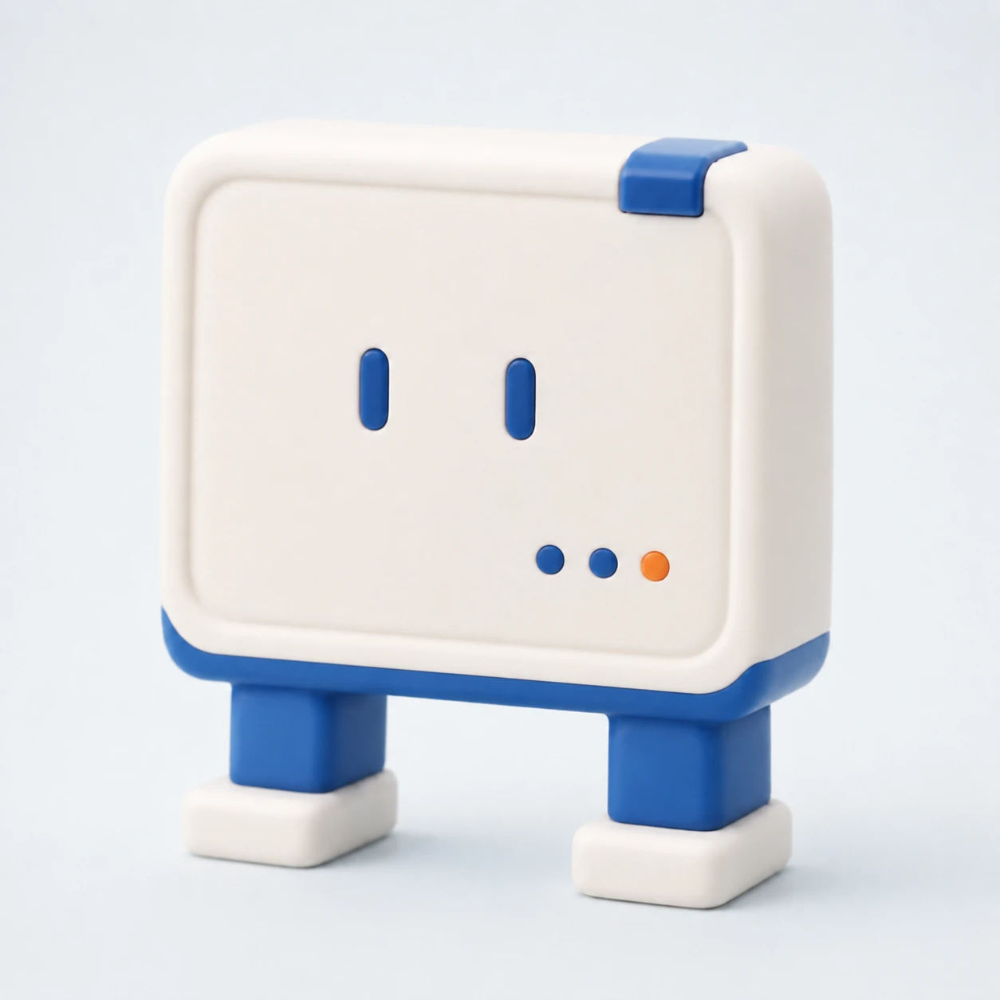
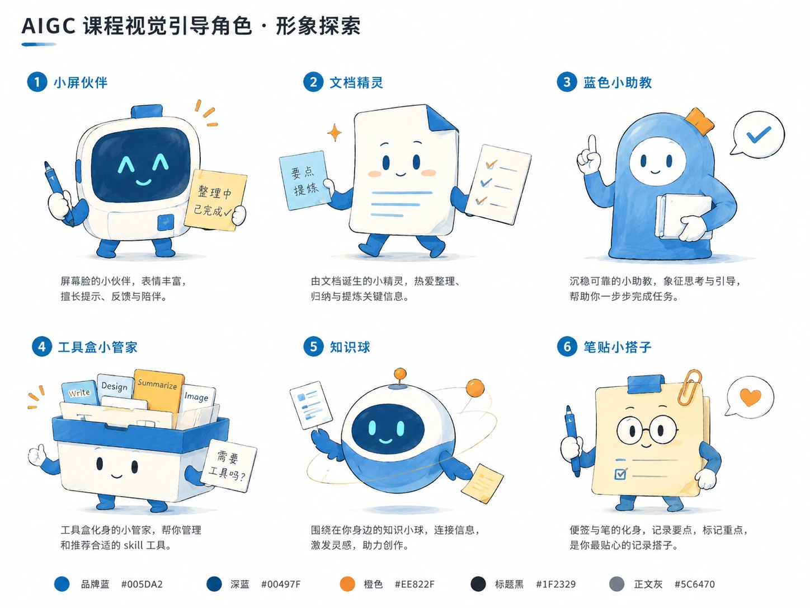
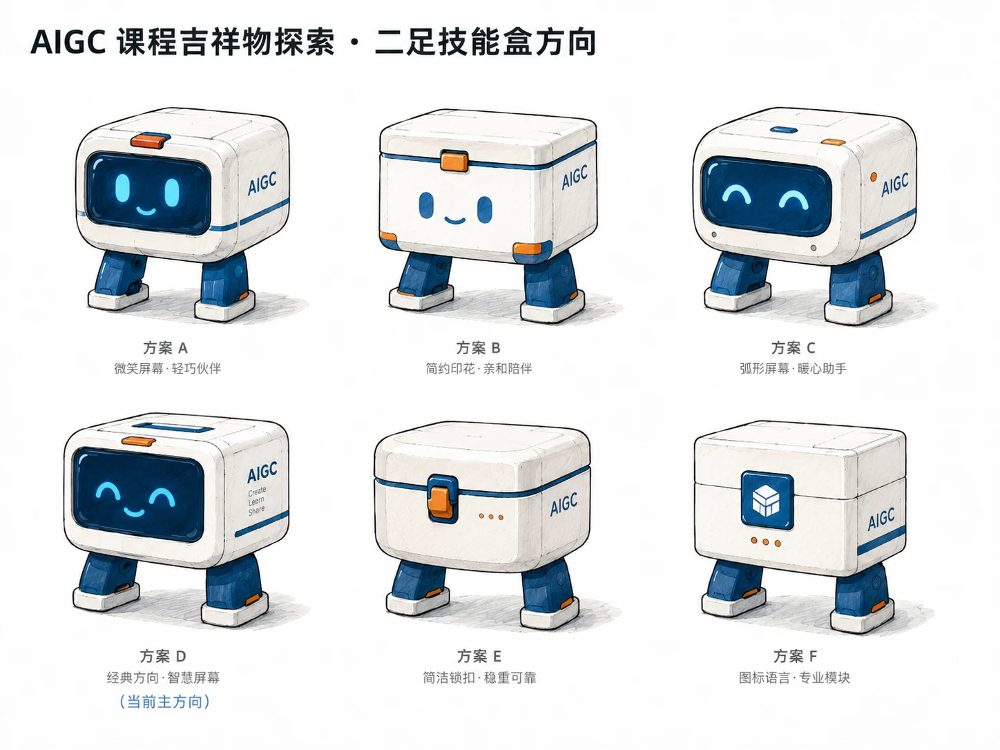
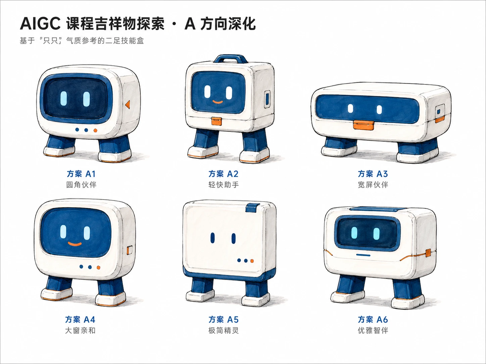
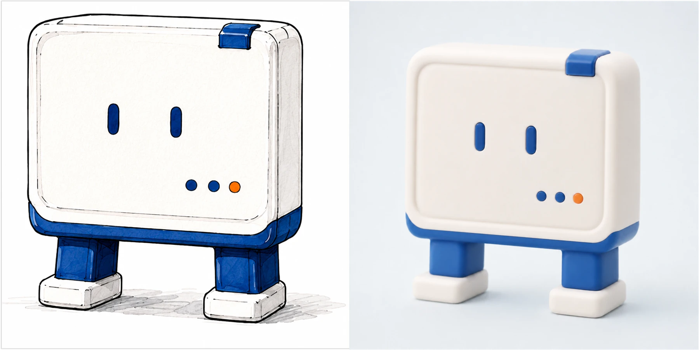
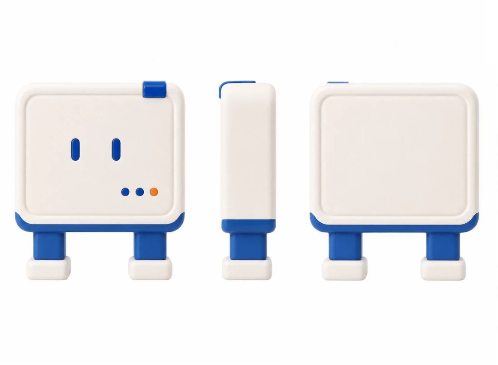
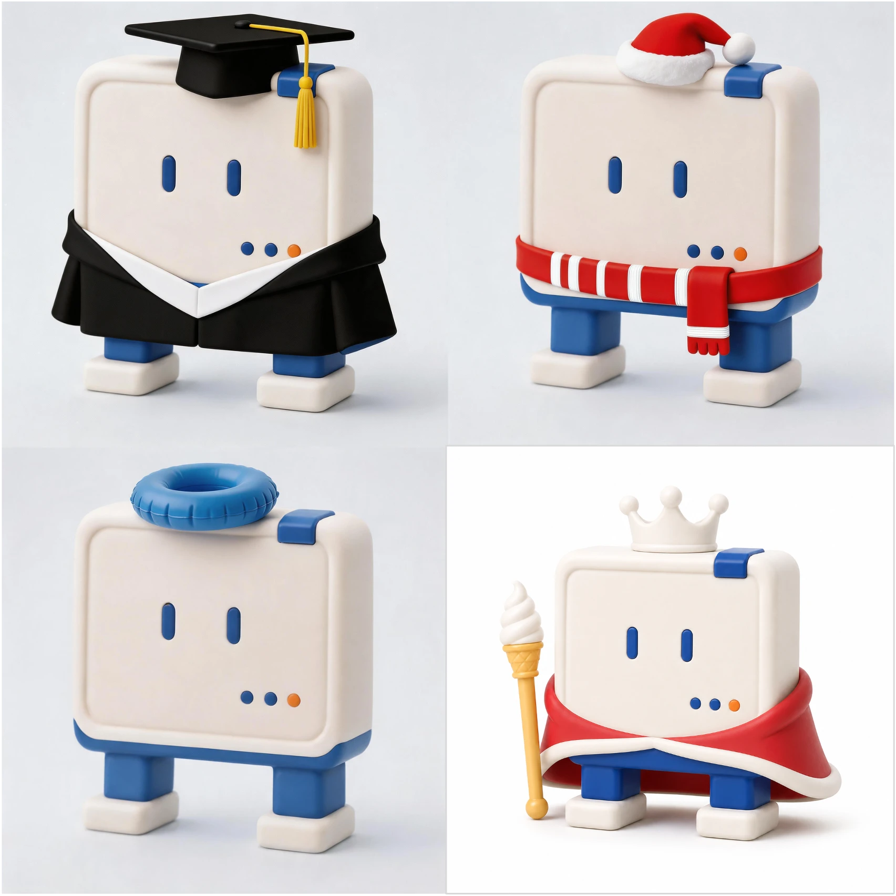
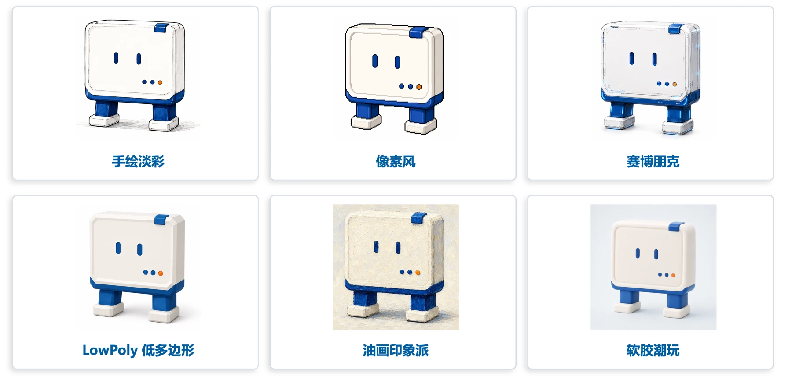
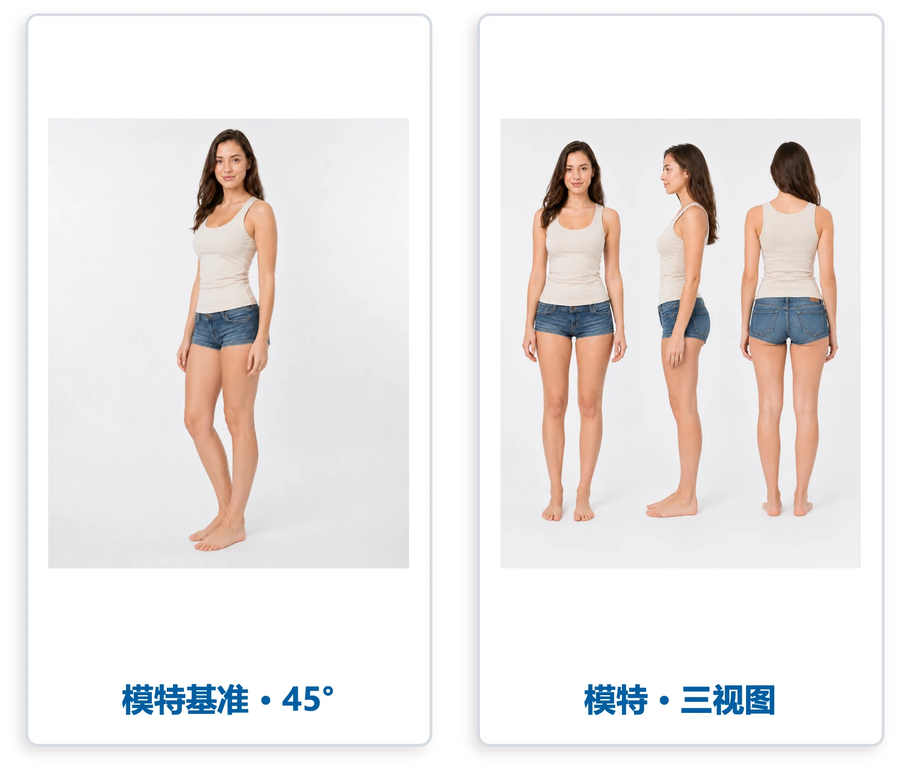
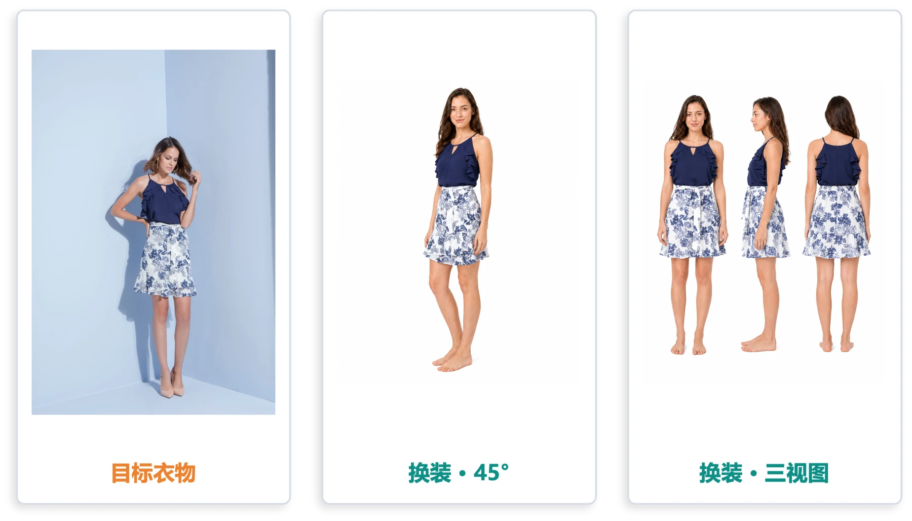

第一部分｜先看结果
01｜角色设定
一个形象能不能立住，看它有没有一张说得清楚的名片。
做原创 IP 的终点，是拿到一个有名有姓、有性格、有边界的角色。名片一旦定下来，后面每一次换装、换风格都有了准绳。
以我们做的AI学习搭子「小A」 为例，一张完整的角色名片包含五项：
- 名字：小A。A 来自 AI，好记、亲和。
- 一句话介绍：从课程系统里长出来的盒状小伙伴，AIGC 学习搭子。
- 性格：安静可靠、好奇、爱帮忙、不抢戏。
- 喜好：收集并点亮新 skill、整理资料、陪人踩坑。
- 雷区：勿高冷卖弄、勿低幼过度可爱、勿强机械科技感。

小A 的软胶潮玩定稿
02｜形象资产
AI 生图真正值钱的产出，是一个能被反复识别、反复使用的形象。
一张好看的图用一次就过去了。形象资产不一样，它把脸、颜色、比例和性格固定下来，后面每一次生成都长在它上面，海报、周边、详情页可以反复调用同一个角色。做一个原创 IP，图只是中间产物，资产才是留在手里的东西。
角色名片只是其中一项。一次做齐四样东西，这个形象才算真正立住：
- 基准定稿图：确定下来的形象主图，后续所有生成都以它为唯一基准。
- 三视图：正面、侧面、背面画在一张图里，角色的标准身份证照。
- 角色设定：名字、一句话介绍、性格、喜好与雷区，决定形象往哪个方向生长。
- 延展图：至少 3 张换装或换风格图，验证形象能被稳定复用。
第二部分｜做出 IP
03｜定调性
方向是一轮轮聊出来的。
把品牌定位、用途、受众、想要的气质丢进同一个对话框，让 AI 陪着持续深聊。它会不断抛出新的可能，你负责挑和否，方向就在这一来一回里变清楚。
关键动作：一步步收敛
一次聊到位很难。先给方向，再否定和修正，让形象逐渐清晰。
工具：WorkBuddy + DeepSeek
发想、起名、写设定都用它。把项目背景和已有想法写成文字发给 AI，让它提出角色方向，再继续说明哪些地方喜欢、哪些地方要改。
04｜发散与收敛
先砍掉「一眼 AI」的方向
起步方案里最容易出现的那个，往往就是最该被否掉的那个。
第一版形象是最典型的 AI 机器人：圆头、机械臂、蓝白金属。它一眼就能被认出是 AI，也一眼就会被忘记。
否掉它的三个理由：
- 太像常见的 AI 机器人符号，刻板、老土。
- 撑不住长期、反复出现，看三次就腻。
- 一开始就选这种方向，后面每一次延展都会被它拖住。
反例：刻板机器人
先发散，再收敛
让 AI 给出足够多的可能性，然后大胆做减法。
好形象是一轮轮聊窄的，很难一次生成到位。整个过程分两步走：先尽情发散，让 AI 把各种方向铺开；再逐步收敛，最后挑一张定稿。
小A 的收敛走了四步，每一步都在做减法：
- AI 机器人：太刻板老土，否掉。
- 课程吉祥物：更亲和，方向对了，但还没立住。
- skill 工具盒拟人化：有了性格来源，结构还是太复杂。
- 二足技能盒：去掉多余部件，定稿。
四步下来，砍掉的是三样东西：机器人感、工具箱感、复杂结构。方向越聊越准，最后落在一个简洁亲和的二足技能盒上。

六种角色方向探索

二足技能盒的六方向探索

选定方向后的六种深化方案
05｜选主图风格
主图风格决定了这个形象后面能走多远。
小A 这两种风格都出过图，差别不在好不好看，在能不能接着用。
- 手绘淡彩风：有手感、有温度。在这组探索中，体块边界偏软，继续生成时容易走形。
- 软胶潮玩风：轮廓清晰、体块明确，在小A 的探索中更适合用作三视图和延展图的基准。

主图风格对比：手绘淡彩与软胶潮玩
06｜三视图
角色的标准身份证照
三视图只解决一件事：让后面每一次生成都有统一的依据。
概念：把同一角色的正面、侧面、背面画在一张图里，作为后续延展的统一基准。
方法：以定稿图为参考图，让 AI 直接生成，保持质感与角色一致。
关键约束：
- 手臂默认隐藏。
- 蓝、橙、奶白三种颜色严格匹配原图。
- 三视图之间统一无偏色。

小A 的三视图
三视图提示词
把定稿图和提示词一起交给 AI，明确三视图需要保持的角色特征。
以定稿图为唯一基准，生成正 / 侧 / 背三视图，等比并排、完全一致；〔角色核心特征〕；色彩严格匹配原图、统一无偏色；保持现有质感，纯白背景。
07｜写设定
设定的初稿可以交给 AI，最后的判断必须自己来。
设定就是角色的目标用户画像：它出现在谁面前，用什么姿态出现。
方法：把定稿图和项目背景交给 AI，让它拆出形象特征、写出角色设定，再由你人工补充修正。
写到什么程度算完成：名字、一句话介绍、性格、喜好、雷区五项齐全，每一项都能在生成时当约束用。写得越具体，换装和换风格越不跑偏。
第三部分｜用好 IP
08｜换装
先判断该不该换
衣服本身就是记忆点的形象，换不得。
有的 IP 以服饰作为记忆点。这种情况，保留标志性服饰、调整场景或动作更稳妥；配色变化也要保住角色的识别特征。
能换的时候，方向也别凭喜好定：先看这组图要用在什么场合，再决定穿什么。
换装的作用
IP 得出现在大家的生活里。
大家过什么节、在什么场合，IP 就跟着换什么衣服。穿得一样、出现在同一个场景里，角色才不像站在旁边打广告的陌生人。
拿几个典型的来说：
- 毕业季：学生穿学士服，IP 也套一件，往毕业照里一站，就是个同学。
- 圣诞：大家换上节日装，IP 跟着换，一起过节才像那么回事。
- 夏天：大家去海边，IP 换上度假装，出现在同一片沙滩上。
- 品牌联名：IP 穿上合作款，我们一眼就认出来，那是自己熟悉的东西。

小A 的四套换装
换装提示词
提示词：把「不变」和「要换」分开写。
示例
小A 核心造型 100% 不变（奶白方盒、屏幕脸双眼、二足、无手臂、蓝白 + 橙）；服饰极致卡通化、去写实纹理，哑光软塑胶质感；穿学士服 / 圣诞装 / 海边度假装 / 蜜雪冰城雪王联动；纯白背景。
技巧
沿用同一张参考图和前半段的造型要求，每次只替换后半段的服装与场景，继续尝试不同装扮。
「所有服饰配饰做极致卡通化、去写实纹理」让服装和角色统一在卡通质感里，衣服换得再多，看起来还是同一个角色。
09｜换风格
锁住基准，只换风格
把造型交给参考图，你只负责说换成什么风格。
做法只有两步：
- 先生成一张满意的基准风格图，后续所有风格延展都参考它。
- 上传同一张图，说明目标风格。不必重复整套造型，但要把保持造型与配色作为明确要求。
同一张基准图，可以换出完全不同的气质：手绘淡彩、像素风、赛博朋克、LowPoly 低多边形、油画印象派、软胶潮玩。

同一张基准图的六种风格
换风格提示词三件套
提示词围绕基准图、目标风格和背景展开，保留清楚的约束。
示例
以〔基准图：小A〕为唯一基准，严格保持造型与配色不变，仅切换整体风格为〔目标风格〕；〔背景：纯白背景〕。
可变变量
- 目标风格：手绘淡彩 / 像素 / 赛博朋克 / LowPoly / 油画印象派 / 软胶潮玩 …
10｜数字模特
锁住主体，换掉外层
同一套「锁住主体、换掉外层」的方法，把对象换成真人模特，就是电商里的虚拟试衣。
做法和给 IP 换装完全一致，只是约束对象从卡通角色换成了真人。
锁定模特基准：先准备一张 45° 斜侧图，再补一张三视图。将保持五官、身形、姿势和肤色不变写成明确要求。

数字模特的基准图与三视图
输入与成品
把模特基准图和目标衣物图一起交给 AI，生成同一位模特的上身图。
上传模特基准图和目标衣物图片，要求生成 45° 上身图与换装三视图。同一件衣服可以继续尝试不同角度和背景，组织成详情页展示素材。用于商品展示时，要核对版型、花纹和细节是否与实物一致。

目标衣物与数字模特换装成品
小结
- 怎么做出 IP：先发散再收敛挑出定稿，再用三视图和角色设定把特征固定下来。
- 怎么使用 IP：基于三视图，可随着主题进行换装，可按实际所需换风格。当然，同一套方法，换到AI真人模特就是电商上身图。